Lessons
What to teach this month
Pick a month. Where we have a ready-to-teach lesson for a date, it comes first, with the printables and files that fit the month below it.
Printables for January
Back from break: report card season, a fresh semester, and a reset for the paper and folders that pile up.
 Free fileForeign Language Report Card CommentsA sampler of 50 report card comments for world language teachers, written in English for families, in three sections…
Free fileForeign Language Report Card CommentsA sampler of 50 report card comments for world language teachers, written in English for families, in three sections…
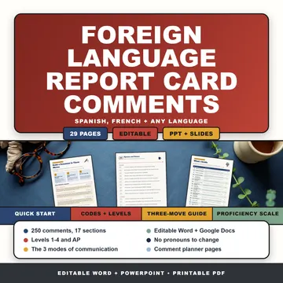
In the storeForeign Language Report Card CommentsSpanish & French Comment Bank 6-12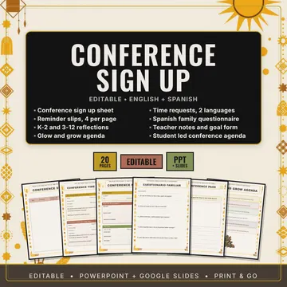
In the storeParent Teacher Conference Sign Up and FormsEditable Reminders and Notes Teacher to TeacherHow to Organize Student Papers in the ClassroomWe read the six teacher blogs that come up first for this and pulled out the system they all quietly share: three containers, a student job that empties them, and a rule… Teacher to TeacherThe Take-Home Folder System: What Goes In It and How to Run ItWe read the teacher blogs that come up first for this and pulled out what actually goes in the folder, why the two sides are labeled opposite ways on different pages… Free fileGradebook Printable TemplateA printable teacher gradebook in PowerPoint and PDF: a grade grid, an assignment key, an attendance sheet, a class…
Free fileGradebook Printable TemplateA printable teacher gradebook in PowerPoint and PDF: a grade grid, an assignment key, an attendance sheet, a class…
Printables for February
The long stretch between breaks: a Valentine's review game, review games that keep a class moving, and a behavior tracker.
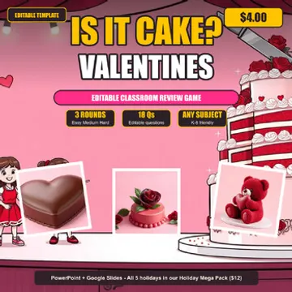
In the storeIs It Cake Valentine's EditionEditable Review Game · PowerPoint + Google Free fileJeopardy GameA Jeopardy-style review game in PowerPoint and Google Slides with an outer space galaxy theme.
Free fileJeopardy GameA Jeopardy-style review game in PowerPoint and Google Slides with an outer space galaxy theme.
 Free fileEscape Room Classroom GameAn editable PowerPoint escape room set under the sea.
Free fileBehavior Tracker EditableAn editable behavior tracker for kindergarten through grade 3: a daily points sheet scored by time block on Safe…
Teacher to TeacherHow to Get Students Speaking Spanish in ClassThe seven Spanish teachers who come up first for this question split into two camps: one takes points away for English, one removes the reasons not to speak.
Free fileEscape Room Classroom GameAn editable PowerPoint escape room set under the sea.
Free fileBehavior Tracker EditableAn editable behavior tracker for kindergarten through grade 3: a daily points sheet scored by time block on Safe…
Teacher to TeacherHow to Get Students Speaking Spanish in ClassThe seven Spanish teachers who come up first for this question split into two camps: one takes points away for English, one removes the reasons not to speak.
Printables for March
Report cards again, plus review games for the weeks before spring testing.
Free fileForeign Language Report Card CommentsA sampler of 50 report card comments for world language teachers, written in English for families, in three sections…
In the storeForeign Language Report Card CommentsSpanish & French Comment Bank 6-12
 Free filePress Your Luck Classroom GameAn editable PowerPoint review game with an 80s arcade look.
Free filePress Your Luck Classroom GameAn editable PowerPoint review game with an 80s arcade look.
 Free fileShark Tank Classroom GameAn editable PowerPoint review game in the style of the TV show.
Free fileShark Tank Classroom GameAn editable PowerPoint review game in the style of the TV show.
 Free fileJeopardy GameA Jeopardy-style review game in PowerPoint and Google Slides with an under-the-sea theme.
Free fileJeopardy GameA Jeopardy-style review game in PowerPoint and Google Slides with an under-the-sea theme.
Printables for April
Earth Day posters, vocabulary review games, and a quick Spanish tense drill for spring.
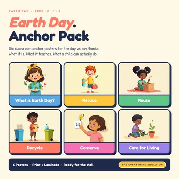
In the storeEarth Day Anchor Pack6 Classroom Posters PreK K 1 2 · Reduce Reuse Recycle Free file$100,000 Pyramid Classroom GameA vocabulary game in the style of the TV show Pyramid: one partner describes each word without saying it while…
Free file$100,000 Pyramid Classroom GameA vocabulary game in the style of the TV show Pyramid: one partner describes each word without saying it while…
 Free fileEscape Room Classroom GameAn editable PowerPoint escape room with a superhero story.
Teacher to TeacherHow to Get Students Speaking Spanish in ClassThe seven Spanish teachers who come up first for this question split into two camps: one takes points away for English, one removes the reasons not to speak.
Free fileEscape Room Classroom GameAn editable PowerPoint escape room with a superhero story.
Teacher to TeacherHow to Get Students Speaking Spanish in ClassThe seven Spanish teachers who come up first for this question split into two camps: one takes points away for English, one removes the reasons not to speak.
Printables for May
The last weeks: end of year games, puzzles for early finishers, and the last round of report cards.
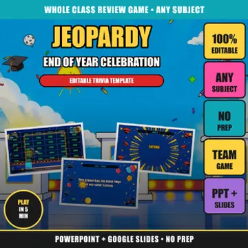
In the storeEnd of Year Jeopardy GameEditable Review · PowerPoint + Google Slides In the storeFamily Feud End of Year GameEditable Review · PowerPoint + Google Slides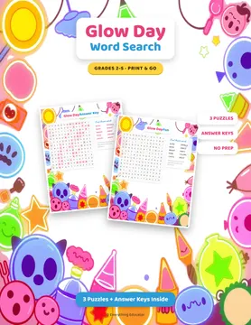
In the storeGlow Day Word SearchNeon End of Year Puzzles · Grades 2-5 Free fileSummer Edition Review GameAn editable PowerPoint review game based on the TV show Is It Cake.
Free fileForeign Language Report Card CommentsA sampler of 50 report card comments for world language teachers, written in English for families, in three sections…
In the storeForeign Language Report Card CommentsSpanish & French Comment Bank 6-12
Free fileSummer Edition Review GameAn editable PowerPoint review game based on the TV show Is It Cake.
Free fileForeign Language Report Card CommentsA sampler of 50 report card comments for world language teachers, written in English for families, in three sections…
In the storeForeign Language Report Card CommentsSpanish & French Comment Bank 6-12
Printables for June
The last days of school and Juneteenth: posters, a reading passage, a bulletin board kit and print and go puzzles.
 Free fileJuneteenth Anchor PackSix US Letter anchor posters for Juneteenth in an 8-page PDF, one for each value, from what Juneteenth is and freedom…
Free fileJuneteenth Anchor PackSix US Letter anchor posters for Juneteenth in an 8-page PDF, one for each value, from what Juneteenth is and freedom…
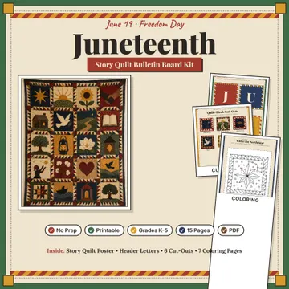
In the storeJuneteenth Bulletin Board KitStory Quilt Posters, Header Letters & Coloring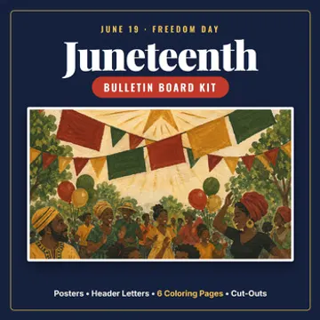
In the storeJuneteenth Bulletin Board KitPosters, Coloring Pages & Header Letters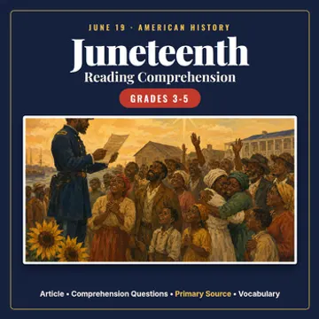
In the storeJuneteenth Reading Comprehension Passage, Questions & ActivitiesGrades 3-5Free fileSummer Edition Review GameAn editable PowerPoint review game based on the TV show Is It Cake.
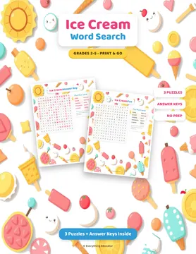
In the storeIce Cream Word SearchSummer Brain Break Puzzles · Grades 2-5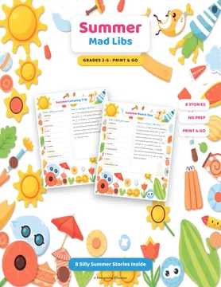
In the storeSummer Mad Libs8 Fill in the Blank Stories · Print and Go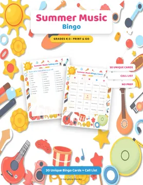
In the storeSummer Music Bingo30 Game Cards + Call List · Print and Go GamePrintables for July
Summer is planning time: set up the room early, and keep a few Fourth of July and summer games on hand.
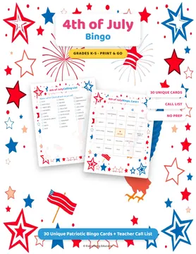
In the store4th of July BingoPatriotic America 250 Class Party Game 30 Cards K-5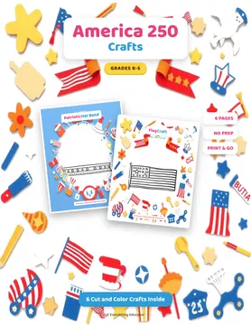
In the storeAmerica 250 CraftPatriotic 250th Anniversary Cut and Color Crafts K-5 In the storeSummer Music Bingo30 Game Cards + Call List · Print and Go Game In the storeSummer Mad Libs8 Fill in the Blank Stories · Print and GoFree fileSummer Edition Review GameAn editable PowerPoint review game based on the TV show Is It Cake.
Teacher to TeacherHow to Set Up a Spanish Classroom for the First DayWe read the Spanish-teacher blogs that come up first for this and pulled out what goes on the walls before day one, what is deliberately left blank, and the six zones…
Teacher to TeacherHow to Organize Student Papers in the ClassroomWe read the six teacher blogs that come up first for this and pulled out the system they all quietly share: three containers, a student job that empties them, and a rule…
Printables for August
Back to school: the first days, the room setup, and free icebreakers for week one.
 Free fileBack to School Icebreaker Games SamplerA four-page print-and-play icebreaker sampler with one Human Bingo (Find Someone Who) board and four Would You Rather…
Free fileBack to School Icebreaker Games SamplerA four-page print-and-play icebreaker sampler with one Human Bingo (Find Someone Who) board and four Would You Rather…
 Free fileKissing Hand Poem PrintableA first-day-of-school poem keepsake with four parts: the poem, a handprint keepsake page, a My Kiss in My Hand page…
Free fileKissing Hand Poem PrintableA first-day-of-school poem keepsake with four parts: the poem, a handprint keepsake page, a My Kiss in My Hand page…
 Free fileTodo Sobre MíTwo editable all about me worksheets in Spanish: Todo Sobre Mí has six sentence starters about the student, and Sobre…
Teacher to TeacherFirst Day of Spanish Class: Routines and Procedures That HoldWe read the Spanish-teacher blogs that come up first for this question and found they disagree about the two biggest questions: how much Spanish on day one…
Teacher to TeacherHow to Set Up a Spanish Classroom for the First DayWe read the Spanish-teacher blogs that come up first for this and pulled out what goes on the walls before day one, what is deliberately left blank, and the six zones…
Free fileTodo Sobre MíTwo editable all about me worksheets in Spanish: Todo Sobre Mí has six sentence starters about the student, and Sobre…
Teacher to TeacherFirst Day of Spanish Class: Routines and Procedures That HoldWe read the Spanish-teacher blogs that come up first for this question and found they disagree about the two biggest questions: how much Spanish on day one…
Teacher to TeacherHow to Set Up a Spanish Classroom for the First DayWe read the Spanish-teacher blogs that come up first for this and pulled out what goes on the walls before day one, what is deliberately left blank, and the six zones…
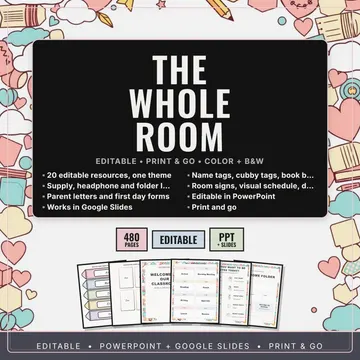
In the storeBack to School Classroom Setup Bundle20 Editable Labels, Signs, Name Tags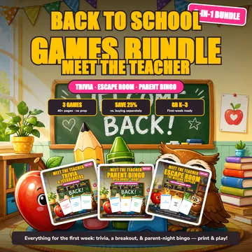
In the storeBack to School Games BundleMeet the Teacher Trivia, Escape Room, Bingo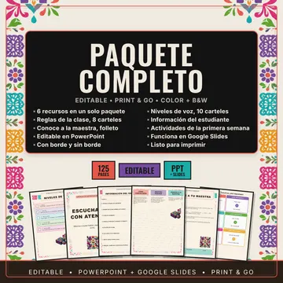
In the storeRegreso a Clases en EspañolPaquete Completo del Salón · 6 Recursos EditablesPrintables for September
Hispanic Heritage Month starts September 15, and the first weeks are still about routines.
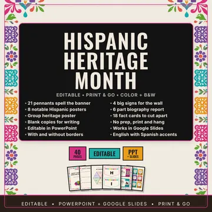
In the storeHispanic Heritage Month Bulletin Board KitBanner Posters and Fact Cards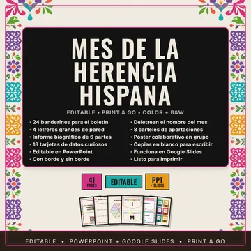
In the storeHispanic Heritage Month Bulletin Board in SpanishMes de la Herencia Hispana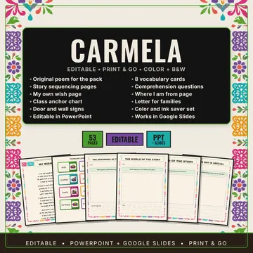
In the storeCarmela Full of Wishes Book CompanionHispanic Heritage Month Read Aloud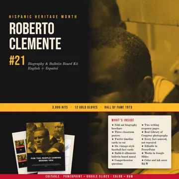
In the storeRoberto ClementeHispanic Heritage Month Biography Reading Activities Free fileRecursos Gratis en EspañolSpanish-language classroom printables: a welcome banner, editable labels for classroom materials, and four routine…
Teacher to TeacherThe Take-Home Folder System: What Goes In It and How to Run ItWe read the teacher blogs that come up first for this and pulled out what actually goes in the folder, why the two sides are labeled opposite ways on different pages…
Free fileRecursos Gratis en EspañolSpanish-language classroom printables: a welcome banner, editable labels for classroom materials, and four routine…
Teacher to TeacherThe Take-Home Folder System: What Goes In It and How to Run ItWe read the teacher blogs that come up first for this and pulled out what actually goes in the folder, why the two sides are labeled opposite ways on different pages…
 Free fileAI Classroom Policy TemplateA one-slide editable AI classroom policy poster, plus a four-page printable PDF.
Free fileAI Classroom Policy TemplateA one-slide editable AI classroom policy poster, plus a four-page printable PDF.
Printables for October
Halloween and Día de los Muertos, with Hispanic Heritage Month running through October 15.
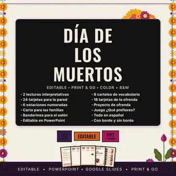
In the storeDia de los Muertos BundleLecturas Juegos Carteles y Proyecto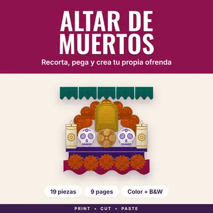
In the storeAltar de Muertos CraftOfrenda Cut and Paste · Dia de los Muertos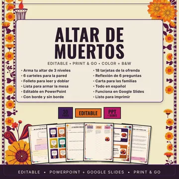
In the storeAltar de Muertos Craft en EspanolOfrenda Dia de los Muertos Actividades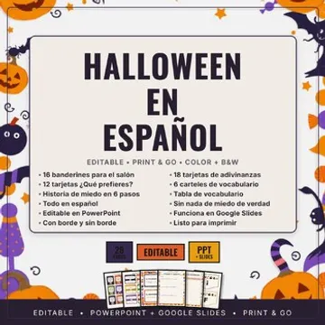
In the storeHalloween en Espanol ActividadesJuegos y Decoracion para la Clase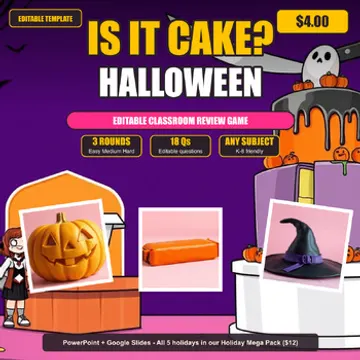
In the storeIs It Cake Halloween EditionEditable Review Game · PowerPoint + Google Slides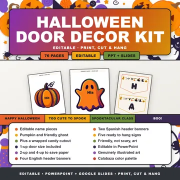
In the storeHalloween Door Decor and Halloween Bulletin Board KitEditable Name Tags Teacher to TeacherHow to Teach Hispanic Heritage Month in Spanish ClassWe read the Spanish-teacher blogs that come up first for this and pulled out what works, what they admit fails, and the four-week plan that makes every day end…Lessons for November
Open a lesson, press Teach it now, and run it from the page. No prep and no download.
 All NovemberNative American Heritage MonthSort true from false about Native nations today, then write two facts in the present.
All NovemberNative American Heritage MonthSort true from false about Native nations today, then write two facts in the present.
 Nov 11Veterans DayGuess why 11 a.m. on 11/11, learn four facts, write questions for a veteran.
Nov 11Veterans DayGuess why 11 a.m. on 11/11, learn four facts, write questions for a veteran.
 Nov 13World Kindness DaySort polite from kind, then plan two small kindnesses you can do at school this week.
Nov 13World Kindness DaySort polite from kind, then plan two small kindnesses you can do at school this week.
 Nov 26Thanksgiving WeekRead the one 1621 eyewitness account, sort what we know, and write a specific thank you.
Nov 26Thanksgiving WeekRead the one 1621 eyewitness account, sort what we know, and write a specific thank you.
 Nov 1 to 2Día de los MuertosRead an ofrenda piece by piece, then explain why it is not Halloween.
Nov 1 to 2Día de los MuertosRead an ofrenda piece by piece, then explain why it is not Halloween.
 Nov 2Election DayRun a class vote step by step, then find where a mistake could happen.
Nov 2Election DayRun a class vote step by step, then find where a mistake could happen.
Printables for November
Thanksgiving, Native American Heritage Month, and conference and report card season.
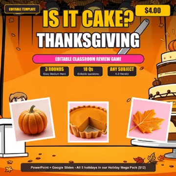
In the storeIs It Cake Thanksgiving EditionEditable Review Game · PowerPoint + Google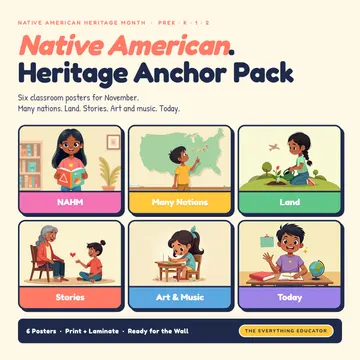
In the storeNative American Heritage Month Anchor Pack6 Classroom Posters PreK K 1 2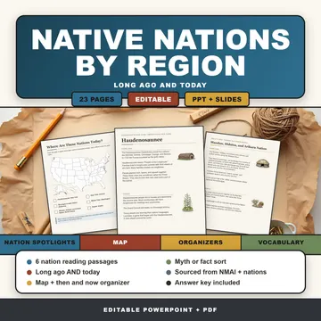
In the storeNative American Regions and NationsReading Passages, Map & Organizers 3-5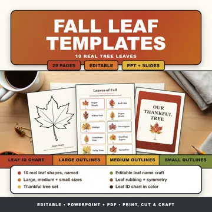
In the storeFall Leaf TemplatesReal Leaf Outlines in 3 Sizes, Thankful Tree & Leaf Crafts In the storeParent Teacher Conference Sign Up and FormsEditable Reminders and NotesFree fileForeign Language Report Card CommentsA sampler of 50 report card comments for world language teachers, written in English for families, in three sections…
In the storeForeign Language Report Card CommentsSpanish & French Comment Bank 6-12
Lessons for December
Open a lesson, press Teach it now, and run it from the page. No prep and no download.
 Dec 4 to 12HanukkahLearn the story in five facts, draw a hanukkiah, and write a respectful question.
Dec 4 to 12HanukkahLearn the story in five facts, draw a hanukkiah, and write a respectful question.
 Dec 7 to 13Computer Science Education WeekBe the robot, write exact steps for a picture, then debug them after a partner tests them.
Dec 7 to 13Computer Science Education WeekBe the robot, write exact steps for a picture, then debug them after a partner tests them.
 Dec 15Bill of Rights DayWrite three promises a new government should keep, then match amendments to six cases.
Dec 15Bill of Rights DayWrite three promises a new government should keep, then match amendments to six cases.
 Dec 16 to 24Las PosadasLearn the roles, write a four line door song, and perform it at the classroom door.
Dec 16 to 24Las PosadasLearn the roles, write a four line door song, and perform it at the classroom door.
 Dec 17 to 23Before Winter BreakLook back on the year, write a WOOP plan, and swap it with a partner to check.
Dec 17 to 23Before Winter BreakLook back on the year, write a WOOP plan, and swap it with a partner to check.
 Dec 21Winter SolsticeCompare daylight in two cities, draw Earth's tilt, and rank four cities by daylight.
Dec 21Winter SolsticeCompare daylight in two cities, draw Earth's tilt, and rank four cities by daylight.
Printables for December
The last weeks before break: holiday review games, feelings check-ins, and a Spanish and English story.
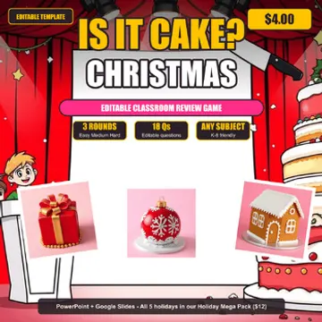
In the storeIs It Cake Christmas EditionEditable Review Game · PowerPoint + Google Slides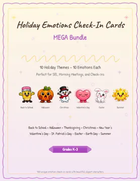
In the storeHoliday Emotions Check-In V2 BundleSEL Feelings Posters PreK-4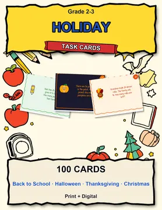
In the storeHoliday Math Task Cards MEGA Bundle100 Cards 10 Holidays Grade 2-3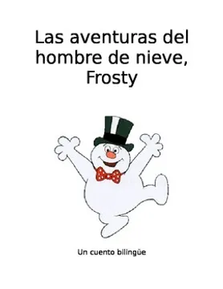
In the storeBilingual Holiday Story: Adventures of Frosty the Snowman in Spanish & English!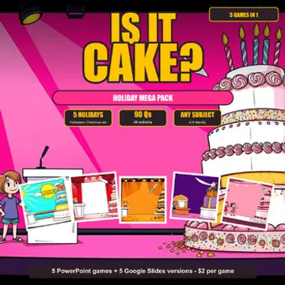
In the storeIs It Cake Holiday Mega Pack5 Editable Review Games · Halloween ChristmasFree file$100,000 Pyramid Classroom GameA vocabulary game in the style of the TV show Pyramid: one partner describes each word without saying it while…
 Free fileBucket Filler ActivityA bucket filler sort with kindness notes.
Free fileBucket Filler ActivityA bucket filler sort with kindness notes.
Looking for something else?
Search the whole site from the magnifier in the header, or browse by type.